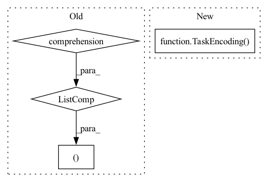

Pattern ID :18050

Before Change
) -> Tuple[
List[TransformerSeq2SeqInputEncoding], List[Metadata], Optional[List[TextDocument]]
]:
input_strings = [self.document_to_input_string(document) for document in documents]
return (
self.encode_input_strings(input_strings),
[{} for _ in range(len(documents))],
documents,
)
def document_to_target_string(self, document: TextDocument) -> str:
After Change
Sequence[TransformerSeq2SeqTaskEncoding],
]
]:
return TaskEncoding(
document=document,
inputs=self.encode_text(document.text),
)
def document_to_target_string(self, document: TextDocument) -> str:
relations: Sequence[BinaryRelation] = document[self.relation_annotation]
In pattern: SUPERPATTERN
Frequency: 3
Non-data size: 4
Instances
Fragment ID: 59185363
Project Name: christophalt/pytorch-ie
Commit Name: 71e9abcacab7dfca0b9ff2e2052008eaf3a52ed0
Time: 2022-04-29
Author: ChristophAlt@users.noreply.github.com
File Name: src/pytorch_ie/taskmodules/transformer_seq2seq.py
M Class Name: TransformerSeq2SeqTaskModule
N Class Name: TransformerSeq2SeqTaskModule
M Method Name: encode_input(3)
N Method Name: encode_input(3)
M Parent Class: _TransformerSeq2SeqTaskModule
N Parent Class: _TransformerSeq2SeqTaskModule
M File Name: src/pytorch_ie/taskmodules/transformer_seq2seq.py
N File Name: src/pytorch_ie/taskmodules/transformer_seq2seq.py
M Start Line: 89
M End Line: 99
N Start Line: 83
N End Line: 94
'>
Before Change
for doc in documents
]
metadata = [
{
"offset_mapping": encoding.pop("offset_mapping"),
"special_tokens_mask": encoding.pop("special_tokens_mask"),
}
for encoding in input_encoding
]
return input_encoding, metadata, documents
def encode_target(
self,
documents: List[TextDocument],
After Change
"special_tokens_mask": inputs.pop("special_tokens_mask"),
}
return TaskEncoding(
document=document,
inputs=inputs,
metadata=metadata,
)
def encode_target(
self,
task_encoding: TransformerTextClassificationTaskEncoding,
'>
Fragment ID: 59185362
Project Name: christophalt/pytorch-ie
Commit Name: 71e9abcacab7dfca0b9ff2e2052008eaf3a52ed0
Time: 2022-04-29
Author: ChristophAlt@users.noreply.github.com
File Name: src/pytorch_ie/taskmodules/transformer_text_classification.py
M Class Name: TransformerTextClassificationTaskModule
N Class Name: TransformerTextClassificationTaskModule
M Method Name: encode_input(3)
N Method Name: encode_input(3)
M Parent Class: _TransformerTextClassificationTaskModule
N Parent Class: _TransformerTextClassificationTaskModule
M File Name: src/pytorch_ie/taskmodules/transformer_text_classification.py
N File Name: src/pytorch_ie/taskmodules/transformer_text_classification.py
M Start Line: 129
M End Line: 157
N Start Line: 128
N End Line: 155
'>
Before Change
inputs.append(encoding)
expanded_documents.append(doc)
metadata = [
{
"offset_mapping": inp.pop("offset_mapping"),
"special_tokens_mask": inp.pop("special_tokens_mask"),
}
for inp in inputs
]
if self.single_sentence:
i = 0
for document in documents:
for sentence_index in range(len(document[self.sentence_annotation])):
metadata[i]["sentence_index"] = sentence_index
i += 1
return inputs, metadata, expanded_documents
def encode_target(
self,
documents: List[TextDocument],
After Change
metadata["partition_idx"] = partition_idx
task_encodings.append(
TaskEncoding(
document=document,
inputs=inputs,
metadata=metadata,
)
)
return task_encodings
'>
Fragment ID: 59185356
Project Name: christophalt/pytorch-ie
Commit Name: 71e9abcacab7dfca0b9ff2e2052008eaf3a52ed0
Time: 2022-04-29
Author: ChristophAlt@users.noreply.github.com
File Name: src/pytorch_ie/taskmodules/transformer_span_classification.py
M Class Name: TransformerSpanClassificationTaskModule
N Class Name: TransformerSpanClassificationTaskModule
M Method Name: encode_input(3)
N Method Name: encode_input(3)
M Parent Class: _TransformerSpanClassificationTaskModule
N Parent Class: _TransformerSpanClassificationTaskModule
M File Name: src/pytorch_ie/taskmodules/transformer_span_classification.py
N File Name: src/pytorch_ie/taskmodules/transformer_span_classification.py
M Start Line: 121
M End Line: 164
N Start Line: 121
N End Line: 163